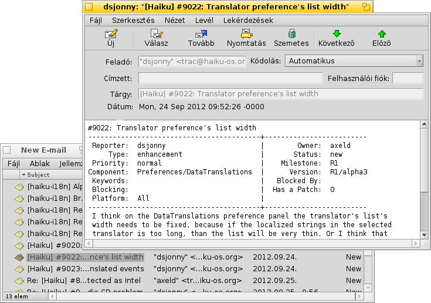
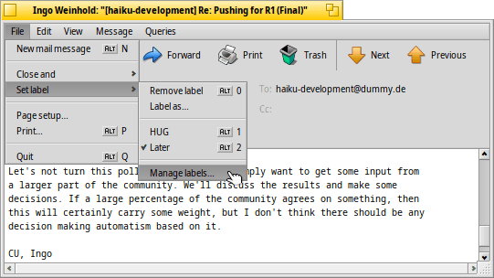
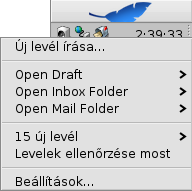
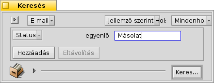
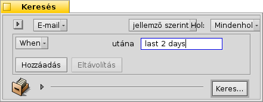
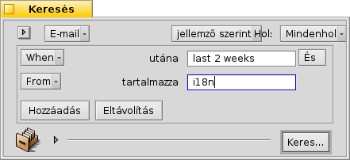

| Index |
|
Haiku's mail system Using labels Using queries More tips |
Műhely: levelek kezelése
Ebben a fejezetben a levelek kezelését tárgyaljuk Haiku alatt. A leírtak alapja egy már beállított levelező rendszer. A beállításokat már minden bizonnyal elvégezted az E-Mail beállítások panelen. Ezen kívül minden bizonnyal már valamilyen szinten ismered a Haiuk levelező programját (Levelezés).
 A Haiku levelező rendszere
A Haiku levelező rendszere
Ha egy másik operációs rendszert használtál eddig, akkor valószínűleg valamelyik ismertebb programot már használtad, mint például a Microsoft Outlook vagy a Mozilla Thunderbird. Használat előtt azok esetében is el kell végezni néhány beállítást. Ezen kívül egyedi adatbázist használ a névjegyek és a levelek tárolására.
A levelező program lecserélése nem egyszerű dolog. Exportálni/importálni és átalakítani kell. Ezen kívül egyszerre egynél több program használatánál is adódhatnak problémáink.
A Haiku levelező rendszere ettől igen eltérő. Például több részből áll össze.
A legfontosabb rész a mail_daemon (levelező szolgáltatás), ami a kommunikációért felel a rendszer és a kiszolgáló között. Az E-Mail beállítások panelen lehet megadni és konfigurálni az e-mail fiókokat és a levelező szolgáltatást.
Minden levél egy fájlként kerül eltárolásra, ahol a levél információi (mint például a feladó, tárgy, dátum) és annak állapota (például új, megválaszolt, elküldött) BFS jellemzőkként lesznek megadva. Ezek a jellemzők pedig segítenek a levelek keresésében/szűrésében..

Mivel minden levél egy fájl, azok listázása és böngészése/használata épp úgy működik, mint bármely más fájl esetén (mint például egy mappában lévő képek és azok megnyitása a Képmegjelenítővel). Ha a Nyomkövető ablakot megnyitva hagyjuk, akkor látni fogjuk, hogy épp melyik levelet olvassuk, miközben a Levelezés programban lépegetünk a levelek között.
Mivel a levelek önálló fájlok, így ha nem a Haiku Levelezés programját használjuk, akkor sem ütközünk semmilyen akadályba.
Ehhez hasonlóan új levél létrehozásakor szintén készül egy fájl, amit szintén a mail_daemon kezel és küld el. Az ismerősök kezelése pedig a Névjegyekkel történik.
Dióhéjban: míg más levelező programok maguk kezelik a kommunikációt a kiszolgálóval, a levelek tárolását, megjelenítését, és a levelek kezelését (keresés, szűrés), addig a Haiku jelentősen kisebb programokat használ, amelyek fájlrendszer szinten kezelik a leveleket:
A mail_daemon fogadja/küldi a leveleket.
Nyomkövető ablak és lekérdezések segítenek a keresésben és a megjelenítésben.
A Levelezés használatos a levelek megtekintésére és új levelek írására. A Névjegyek program pedig rendszer szintű névjegykezelést kínál.
A Nyomkövető és a lekérdezések használata különösen hasznos. Az itt szerzett tapasztalat más fájlokkal való probléma megoldásában is segíthet. Legyen szó képekről, zenéről, videóról, névjegyről vagy bármi más dokumentumról, a Nyomkövető áll a fájlkezelés középpontjában.
Ugyanakkor a fájlrendszer bármely területén történő fejlesztés nem csak a levelezés hanem az összes többi program számára is használható.
Using labels
Amikor az újonnan érkezett levelek közt böngészel, akkor megeshet, hogy valamelyikkel majd csak később akarsz komolyabban foglalkozni. Ekkor a Levelezés menüjét választva a levél megmarad az "Új levelek" között...
De, ha nem akarunk válaszolni a levélre, ez nem a legjobb megoldás.

Better use to create a new label with or choose an existing label to categorize your mail. For example, you could call the label "Later", and then query for that when you find more time.
Or you use different labels for specific projects. For example, I created a label "HUG" (for "Haiku user guide") under which I collect every mail that may influence the contents of the user guide, like commit messages about code changes that alter or introduce some feature or anything else I feel could improve the user guide.
In any case, try to keep the label name short. That way it always fits in a normally wide "Label" column in Tracker.
Once you've dealt with the email, you can use to clear the email's label attribute.
Labels are saved in ~/config/settings/Mail/labels, which is opened when you choose . Here you can add, delete or rename your labels. Conveniently, each label file is also a query, meaning you can doubleclick it to start a query for emails with that label. Handy to check first before deleting a label that you think you don't need anymore.
You don't have to open an email with the Mail application to set its label. With the Tracker add-ons Label as… you can select some email files and set or remove their label in one go.
Lekérdezések használata
A levelek számára meg kell adni egy mappát, így minden levelünk egy helyen lesz majd. Csakhogy idővel a mappa túlzsúfolttá válhat, és a levelek betöltése, rendezése is hosszabb ideig tarthat. Ezen kívül pedig általában nem is törődünk a 2 évvel ezelőtti levelekkel...
A Lekérdezések a megmentőink!
By using queries, you can narrow down the view of your mails. Actually, the mailbox icon in the Deskbar uses queries. Right-click the icon to open its context menu:

Az (Piszkozatok) almenüben találhatóak azok a levelek, melyek állapota "Draft" (piszkozat), amit a Levelezés adott meg, amikor elmentettük a levelet.
Az (Bejövő levelek) és az (levelek mappájának megnyitása) mindössze egy hivatkozás.
A almenü egy lekérdezés azokra a levelekre, melyek állapota "New" (Új). Ugyan ez a lekérdezés adja meg az új levelek számát is a menü nevében..
You can add your own queries (or folders, applications, scripts etc.) to that context menu too, by putting them or links to them into ~/config/settings/Mail/Menu Links. In the screenshot above, for example, the label folder ~/config/settings/Mail/labels was linked there, to have quick access to labeled emails from the the mailbox icon of the Deskbar.
Példa lekérdezésre
Néhány keresési minta:
 |
 |
| This finds all mails with the label "Later". | A legutóbbi két nap levelei. |
 |
|
| Az utóbbi 2 hétben a Haiku i18n-től érkezett levelek. | Az utóbbi 12 órában érkezett levelek, melyek tárgya tartalmazza a "guide" szót. |
További tippek
Ha egy lekérdezést "Keresésként", helyett inkább "Keresési sablonként" mentünk el, akkor a megnyitásakor nem a találat ablak fog megjelenni, hanem a kereső ablak. Ezzel a megoldással a keresés könnyedén módosítható, például a keresés idejét "2 days" (2 napról) "3 days" (3 napra).
A "gépelés közbeni szűrő" engedélyezésekor (a Nyomkövető beállításainál) lehetőségünk van arra, hogy a keresés eredményei között még nyorsabban megtaláljuk azt, amit akarunk. Gyakran elég lekérdezni az utóbbi 3 nap leveleit és abban használni a gépelés közbeni szűrést, így még hatékonyabban tudjuk azt használi. A lényeg az, hogy nem kell megadnunk, hogy mely jellemzőben keressünk, ugyanis így az összes megjelenített mezőben keresni tudunk.
When you're managing your emails via queries - and why wouldn't you? - you should configure a DefaultQueryTemplate that shows all the email attributes you normally want to see in a query result window, like Status, From, Subject, When.
First, you create a folder /boot/home/config/settings/Tracker/DefaultQueryTemplates/text_x-email. Then do one of your usual email queries and change the displayed attributes and window size and position of the result window to your liking. Now simply from its menu, open the newly created text_x-email folder, and there.